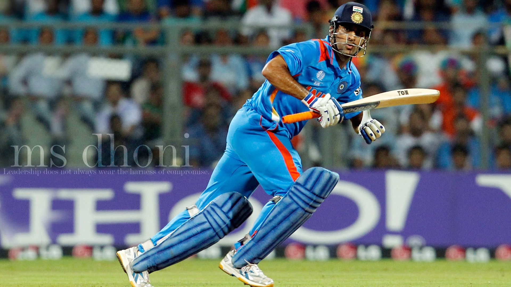

.jpg)

.jpg)
Mahendra Singh Dhoni (commonly known as M. S. Dhoni) is an Indian cricketer who captained the Indian team in limited-overs formats from 2007 to 2016 and in Test cricket from 2008 to 2014. An attacking right-handed middle-order batsman and wicket-keeper, he is widely regarded as one of the greatest finishers in limited-overs cricket. He made his One Day International (ODI) debut in December 2004 against Bangladesh, and played his first Test a year later against Sri Lanka.
Personal Information |
|
|---|---|
| Name | Mahendra Singh Dhoni |
| Born | 7 July 1981 (age 35) Ranchi, Bihar, India |
| Nickname | Mahi, MS, MSD, Captain Cool |
| Height | 5 ft 9 in (1.75 m) |
| Batting style | Right-handed |
| Bowling style | Right-arm medium |
| Role | Wicket-keeper batsman |
Team Information |
|
|---|---|
| Years | Team |
| 2004-2019 | India |
| 1999/00 - 2003/04 | Bihar |
| 2004/05 - present | Jharkhand |
| 2016 - 2017 | Rising Pune Supergiants |
| 2008 - Present | Chennai Super Kings |
Information |
|
|---|---|
| National Side | India |
| ODI/T20I shirt no. | 7 |
| Test debut(cap 251) | 2 December 2005 v Sri Lanka |
| Last test | 26 December 2014 v Australia |
| ODI debut (cap 158) | 23 December 2004 v Bangladesh |
| Last ODI | 9 July 2019 v New Zealand |
| T20I debut(cap 2) | 1 December 2006 v South Africa |
| Last T20I | 27 February 2019 v Australia |
Statistics |
||||
|---|---|---|---|---|
| Competition | Test | ODI | T20Is | FC |
| Matches | 90 | 285 | 73 | 131 |
| Runs scored | 4876 | 9250 | 1112 | 7038 |
| Batting average | 38.09 | 51.10 | 35.87 | 36.84 |
| 100s/50s | 6/33 | 10/61 | 0/0 | 6/47 |
| Top score | 224 | 183* | 48** | 224* |
| Balls bowled | 96 | 36 | - | 126 |
| Wickets | 0 | 1 | - | - |
| Catches/stumping | 256/38 | 269/94 | 41/22 | 364/57 |